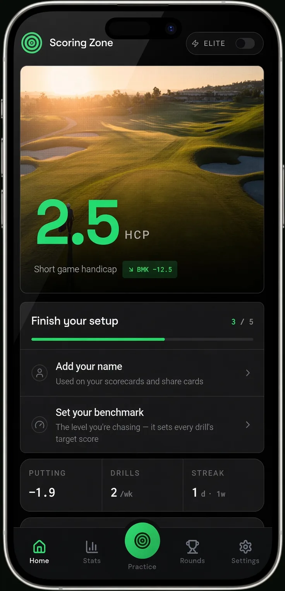
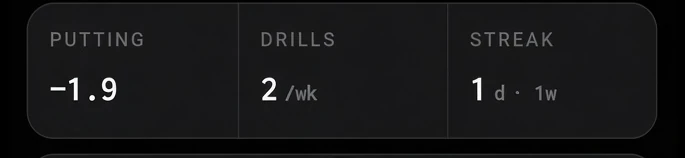
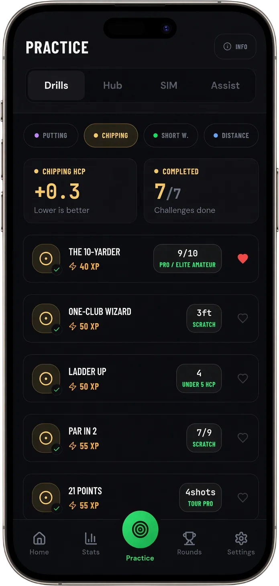
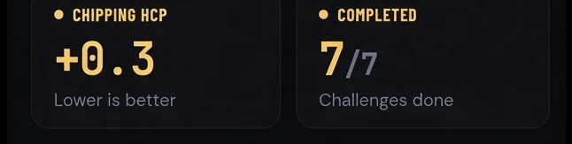

Practice & Improvement
Golf strokes gained explained
How it's calculated, what the four categories mean, and where amateurs really lose shots

How it's calculated, what the four categories mean, and where amateurs really lose shots
Key takeaway: Strokes gained compares every shot with a PGA Tour baseline. The formula is: expected strokes before the shot, minus expected strokes after it, minus one. Add the shots up by category (off the tee, approach, around the green, putting) and it shows exactly where you lose shots. For most amateurs, that’s the long game, not the putter.
Ask a room of club golfers where they lose shots and most will say putting. It’s the part we remember. The three-putt on 18 stays with you all the way home.
The data says something different. When Columbia professor Mark Broadie compared golfers who shoot 84 to 97 with scratch players, the gap was 15.5 shots a round. 9.3 of those came from shots over 100 yards. Putting accounted for 2.3.
That’s the point of strokes gained. It doesn’t care what you remember. It measures every shot against the same benchmark and tells you where the shots actually went.
Here’s how it’s calculated, what the four categories mean, and how to use it if you’re not on tour.
Every position on a golf course has an expected score: the average number of strokes a tour player takes to hole out from there. The PGA Tour built those averages from millions of shots recorded by its ShotLink system.
Strokes gained for a single shot is:
Expected strokes before the shot − expected strokes after the shot − 1
The minus one is the shot you just hit. If a shot leaves you better off than the average tour player would expect, the number is positive. If it leaves you worse off, it’s negative.
Here are some of the baseline numbers the PGA Tour published when it explained the system in 2016:
| Position | Expected strokes to hole out |
|---|---|
| Tee, 410-yard par 4 | 4.0 |
| 150 yards, fairway | 2.92 |
| 150 yards, rough | 3.16 |
| 100 yards, rough | 3.00 |
| 30 feet, on the green | 1.977 |
| 20 feet | 1.874 |
| 10 feet | 1.625 |
| 3 feet | 1.046 |
Three worked examples make it click.
You’re 150 yards out in the fairway (2.92) and hit it to 20 feet (1.874).
2.92 − 1.874 − 1 = +0.05
That surprises most people. A 150-yard shot to 20 feet is roughly what a tour player averages. It feels like a decent shot because it is one.
Same 150 yards in the fairway (2.92), but you push it and finish 100 yards away in the rough (3.00).
2.92 − 3.00 − 1 = −1.08
You hit a shot and ended up further from holing out than when you started. That’s more than a full stroke lost.
Your first putt from 30 feet (1.977) finishes three feet away (1.046): 1.977 − 1.046 − 1 = −0.07. Then you hole the three-footer: 1.046 − 0 − 1 = +0.05.
Two putts from 30 feet costs you about two hundredths of a shot against tour average. In other words, a two-putt from that range is a perfectly good result. Pros only average two putts from about 33 feet.
Mark Broadie is a professor at Columbia Business School, not a PGA Tour employee. He first published the idea in 2008, under the name “shot value”, using ShotLink data the Tour had opened up to researchers.
The Tour adopted Strokes Gained: Putting in May 2011, its first new core statistic in 15 years. Tee-to-green followed in 2014. The full breakdown into off the tee, approach and around the green arrived in June 2016.
Broadie’s main paper, Assessing Golfer Performance on the PGA TOUR, came out in 2012 and used more than 8 million shots. His book Every Shot Counts followed in 2014. If you want the full story, it’s the book to read.
Every shot falls into one of four buckets. These are the PGA Tour’s own definitions.
Tee shots on par 4s and par 5s. Distance and accuracy both count, because both change your expected score for the next shot.
Tee shots on par 3s, plus the first shot after the tee shot on par 4s and par 5s. It isn’t only long irons. A wedge from 90 yards counts as approach too.
Any shot from within 30 yards of the edge of the green, not counting shots on the putting surface. Chips, pitches and greenside bunker shots.
Every shot on the green, measured against the baseline for that distance.
Add the first three together and you get Strokes Gained: Tee-to-Green. Add all four and you get Strokes Gained: Total. You’ll usually see the numbers written per round, as SG/Rd.
Broadie’s 2008 study grouped amateurs by the scores they shoot, which makes it one of the few honest “strokes gained by handicap” comparisons out there. Golfers shooting 84 to 97, against a scratch player:
| Part of the game | Shots lost per round |
|---|---|
| Long game (over 100 yards) | 9.3 |
| Short game (under 100 yards, not sand) | 3.4 |
| Putting | 2.3 |
| Sand | 0.6 |
| Total | 15.5 (parts are rounded) |
He found the same pattern higher up. Between a golfer who shoots 90 and one who shoots 80, approach shots account for about 4 of the 10 strokes.
So yes, I’ll be honest, even though I built a short game app: for most amateurs, the biggest single leak is the long game. The study is from 2008 and it groups golfers by score rather than handicap, so treat the exact split as a guide.
But here’s the bit that matters for your practice. About 6 of those 15.5 shots are inside 100 yards: short game, sand and putting combined. That’s around 40% of the gap, and it’s the part you can practise properly in half an hour with a bucket of balls and a target.
For scored short game drills with benchmarks by handicap:
How to Improve Your Golf Short Game →Fairways hit is yes or no. A drive that finishes a yard into the first cut counts the same as one out of bounds. Strokes gained knows the difference.
Greens in regulation ignores distance. A green hit to 4 feet and a green hit to 60 feet both count as one. Strokes gained: approach doesn’t treat them the same.
Putts per round punishes good chippers. Chip it close and you take fewer putts, but that’s credit for the chip, not the putter. Hit more greens and your putts per round can go up, because you’re putting from further away. Strokes gained splits the credit properly.
Shot tracking systems. Arccos and Shot Scope both record your shots and calculate strokes gained for you. Arccos Smart Sensors are $249.99 with the first year of membership included, then $199.99 a year. Shot Scope has no subscription; its trackers run from $149.99 (H4) to $249.99 (V5). Both are good at what they do. Prices checked on their US sites in October 2026.
By hand. Possible, but slow. Log the distance and lie for every shot, look up the baseline, and do the sums. Most people who try it stop after a round or two.
Scoring Zone. I’ll be straight about what ours does. When you log your rounds, Scoring Zone gives you a simplified strokes gained against your own handicap, built from fairways, greens, up-and-downs and putts. It isn’t shot-by-shot like a tracker. It’s a quick read on which part of your game is costing you against golfers at your level, so you know what to practise next. Then the drills give that practice a score.
Whichever you use, the rule is the same. Stop guessing where your shots go. Measure it, then practise the part that’s costing you most.
Stephen
Strokes gained for a shot equals expected strokes to hole out before the shot, minus expected strokes after it, minus one for the shot itself. For example, from 150 yards in the fairway (2.92 expected) to 20 feet (1.874 expected): 2.92 minus 1.874 minus 1 equals +0.05. The expected values come from PGA Tour ShotLink data.
SG: OTT is Strokes Gained: Off the Tee. It measures tee shots on par 4s and par 5s against the PGA Tour baseline, so both distance and where the ball finishes count.
Strokes Gained: Approach covers tee shots on par 3s and the first shot after the tee shot on par 4s and par 5s. It includes wedges as well as irons, as long as the shot is from outside 30 yards of the edge of the green.
SG/Rd means strokes gained per round. A player with +1.5 SG: Putting per round gains one and a half shots a round on the greens compared with the baseline.
In the long game. Mark Broadie found golfers shooting 84 to 97 lose about 15.5 shots a round to a scratch player: 9.3 from shots over 100 yards, 3.4 from the short game, 2.3 from putting and 0.6 from sand.
7 days free
Then from $4.99/month · Cancel anytime
Start your 7-day free trial
35+ drills & tests · Short Game Handicap · Performance tracking



